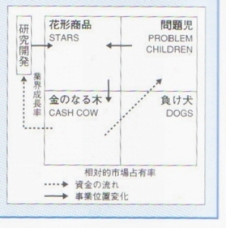

| INNOVATION戦略の記録 | |
| 荒野喆也 | |
| UNKNOWN (2015) | |
新
開発技術者"INNOVATION"戦略の記録
壁掛セパレートエアコン「霧ヶ峰」ブランド確立戦略
電磁調理器(IHクッキングヒータ)市場創出戦略
MOT(技術経営)の視点から見た「霧ヶ峰」・「電磁調理器」の分析
荒野技研
荒野喆也
目次
3- 1 世界のデファクトスタンダードとなった壁掛けセパレート「霧ヶ峰」の創造
3- 2 壁掛けセパレート霧ヶ峰の評価を不動にした「うす型霧ヶ峰」のインパクト
3- 3 薄型霧ヶ峰の先駆 的 I T 化は発光ダイオード「グリーンサイン」
4- 2 客観的評価機関「暮らしの手帳」によるメディア活用戦略
6 . ウェザーマーケティン グ (Weather Marketing ) 戦略
第2 部 電磁調理 器 (I H クッキングヒー タ) の市場創出戦略
第3部 MO T の視点から見た「ルームエアコン」と「電磁調理器」の分析
まえがき
人類の進歩・発展は、科学・技術の革新によって起こるものだという事を信じてきたし、今でも信じている。従って、世の中の人々も科学・技術に携わる人々に、それなりの信頼感を持っていたと思っていた。それが東日本大震災に見舞われ、地震とそれに伴う津波により大きな被害を受けたが、さらに人災の要素が大きいといわれる福島原発による苛酷事故が加わり、日本の将来が危惧されている。そして、その結果、一般の人々による科学者・技術者に対する信頼感が大きく低下したという調査結果を見せられて、きわめて悲嘆の念にとらわれている。しかし、この未曾有の災害から再興させるのも科学・技術であり、更なる発展への可能性も科学・技術によるしかないし、信頼性を勝ち取るための更なる努力が必要となると肝に銘じている。
筆者は、信念があって自然科学系に進んだわけではなかったが、高校生の進路選択の時から、技術者としての道を進んできた。
職を選んだのも、電機製造業であり、その後のコースも一般消費者に身近で、市場としても成長発展していた家庭用電気品の開発業務であった。しかもそこでの直接の担当機種は、電気冷蔵庫、ルームエアコン等の大型家電品であった。中でもルームエアコンは、家庭用の市場が始まった時点から、すなわち製品のライフサイクルの初めの発芽期から成長期・成熟期と最も技術的創造性が求められる時期を責任技術者として担当する僥倖に恵まれた。そして同時期にエアコンで挙げた利益をベースに、機種としては、担当外の電磁調理器(通称IHクッキングヒータ)をゼロから誕生させ、しかるべき市場を作ることができたという幸運にも恵まれた。今回の著作
は、世界のデファクトスタンダードとなっている壁掛けセパレートエアコンの長寿ブランド確立の経緯と、スマート家電(全電化住宅)の核となる電磁調理器誕生の経緯についての開発当事者の記録である。この記録を残しておきたいと思ったのは、時代を通じて、今後も開発業務に携わる技術者の参考になる部分「温故知新」があるはずだ、と思ったからで、その意味で単なる開発記録に加えて、MOT(技術経営)的視点での分析結果も加えた。製品の開発は「始まる時は一人であるが、花が開くときは集団である」と言われるが、これは身を持って体験した人間の本音の物語であり、集団としての仲間に恵まれたことを改めて感謝したい。
平成２４年10月吉日 喜寿を迎えて
開発技術者のINNOVATION戦略の記録
第一部 壁掛ルームエアコン「霧ヶ峰」のブランド確立戦略
1 . 事業戦略の意議
人間の一生には、幼年期、少年期、成年期、壮年期、老年期といような人生のライフサイクルがあるが、企業が世の中に提供する製品にも同じようなライフサイクルがあり、それぞれのライフステージに合わせて、企業活動は異なってくる。これをそれぞれ最適なものにしようという理論が、プロダクトライフサイクル論である。そして多様な製品について、それぞれの製品が、プロダクトライフサイクルのなかで、どの位置にその製品があるのかを見定めて、その位置に最適な、製品の開発・生産・販売戦略を考えるの が PPM(Product Portfolio Management ) 戦略である。筆者が家庭用空調機ルームエアコンの担当になったのは、プロダクトライフサイクルのライフサイクルの初期からであり、ルームエアコン市場の成長期から成熟期にわたり、開発・生産・販売に同一工場で携わることが出来た。このルームエアコン市場は、超成熟製品として今でも事業は継続している。数ある製品の中では、我が国の累積生産台数 約1 億台、売り上げは累積概 算 1 5 兆円を超え、当社の通期市場占有 率 15 % 、企業利益率を数％とすれば、当企業への貢献度は利益額 で 100 0 億を超えるほど巨大であり社会への貢献度もきわめて大きかったはずである。
 2.PP M 戦略とは
こ の PP M 戦略は、アメリカ の BCG(Boston Consulting Group ) が提唱していたマーケティング理論で、 図 1- 1 のように、相対的市場占有率と業界成長率を基本にしたマトリックスである。筆者がルームエアコン事業に携わった時期は、家庭用ルームエアコン立ち上がる時期で、この図の「問題児」の象限にあり、数は多くないが成長率は高かった。しかし、市場占有率は、低く業界第７位であった。この図から考えるべきことは、いずれは、製品は開発期を過ぎて、 図 1-1 PP M 戦略
成長期を経て、飽和期、衰退期をたどることは、自明の理なのであるが、事業の目的は、成熟期になってもしかるべき利益が得られ続け、ライフサイクルを通して、企業への利益貢献を最大にすることである。そのためには、現在の「問題児」から「花形商品」に移行し、成熟期には「金のなる木」にすることである。そのためには、市場占有率を上げることであり、製品の競争力を上げることがすべてである。しかもこの市場占有率の上昇は、市場の成長率が上昇している間に確保する必要がある。市場が飽和しメーカー別のブランドイメージが固定してからの市場占有率の上昇は、経済効率的に成り立ちにくいというのが定説である。従って、製造工場でできることは、市場占有率の向上のための製品の競争力向上しかない。
3 . 製品差別化戦略
3- 1 世界のデファクトスタンダードとなった壁掛けセパレート「霧ヶ峰」の創造
3-1- 1 時代背景
家庭用エアコンの発祥の地はアメリカであり、その形は、一体型の窓かけ式であり、洋風の上下開きの窓に適合するように、やや横長の直方体である。これが太平洋戦争の直後アメリカの駐留軍を通じて我が国に持ち込まれた。我が国の家庭用エアコンは、日本の家庭向けの製品は、洗濯機や冷蔵庫の普及に遅れ て 196 5 年ごろから市販され始めたが、最初の顧客は開業医・理美容院・喫茶店等のいわば業務用途であった。そして、一般の家庭人は、これら業務用途でエアコンの快適性を知り、家庭での需要が高所得層から開かれていった。
しかしこの一体型窓かけ型と日本の家屋構造のミスマッチが顕在化しはじめ、市場が拡大するにつれ、圧縮機を室内側においた床置式が業務用途から開発され始めた。しかし、当時の日本は、衣食は近代化され始めていたが、住の世界はきわめて貧しく、家の面積は、海外から「ウサギ小屋」と揶揄されるほど狭かった。しかし、家屋構造に合った業務用途の床置セパレートは、狭い家庭では受け入れられず大きな騒音源である圧縮機が枕もとでガンガン唸っていては、折角の涼しさも安眠妨害となり、このままでは市場の成長にも影響されることが憂慮され業界では、次の大きな技術革新が期待されていた。
3-1- 2 待たれた技術革新
期待されて登場したのが、壁掛けセパレート型であり、部屋の壁という「ウサギ小屋」でも全く邪魔にならない未開拓の据え付け場所が、選択された。 図 １- ２壁掛けへの流れ
この時同時に壁にかけるためには、重量のある圧縮機等の機械部分を室外側に移す必要があった。このことにより、室内側に騒音源もなくなり、「静粛霧ヶ峰」が高付加価値の製品の始まりとなり、現在は世界中のルームエアコンのデファクトスタンダードとなっている。もともと冷えた空気は、比重的に大きいため重力で下方へ拡散していくために、室内機としての壁かけの位置は、室内機として、最適の据え付け場所であり位置的に合理的である。この変化の大きな流れを示したのが 図 1- 2 である。
3-1- 3 送風機の技術革新
エアコンは、どんな技術革新でも熱力学と流体力学の技術革新が不可欠だが、このセパレート壁掛けの登場を支えたのも送風機の革新である。従来のエアコンの送風機は、シロッコファンであったが、室内側を壁に掛けるための形状上の必要性から初めてラインフローファンが採用された。このラインフローファンは、英国のファースクリーブランド社と技術提携していた当社別工場の製品に使用されていたため、技術移転も効率的であり、壁掛けセパレートの誕生を支えてきた。ラインフローファンの先進性が「超静粛霧ヶ峰」の低騒音化の技術の原点である。
3- 2 壁掛けセパレート霧ヶ峰の評価を不動にした「うす型霧ヶ峰」のインパクト
3-2- 1 薄型志向への背景
製品の差別化の狙いどころとしては、プロダクトライフサイクル論の上で、一つの原則がある。それは、ライフサイクルの初期の開発期での差別化は、基本機能の充実であり、次いで成長期の初期は、付加機能での格差である。さらに成長が続くと、性能では差別化しにくくなり、あまり説明しなくても視覚的に差別化できるような、感覚的なものがポインとになってくる。そして、成熟期から衰退期にかけては、コストが最大の競争ポイントになり、企業の収益性は低下してゆき、競合相手は少なくなっていく。
エアコンのケースでいえば、基本機能はよく冷えることであり、付加機能での格差は、静かによく冷える「超静粛霧ヶ峰」である。そして、次の手として考えなければならないのは、視覚的差別化である。この視覚的差別化の狙いとして検討されたのが、壁掛け室内機の薄型化である。薄型化は顕在化しているニーズでないことと、 図 1- 3 視覚的空間
理論的に薄型のメリットは説明しにくいという事で、やや不安はあったが、将来の冷房暖房兼用型になったら薄型の効用がさらに出るはずであり、デザイン屋さんに視覚的差別化としての訴求ポイントを検討してもらったら、賛同してもらえたので強力に推進した。そして、グループインタビュウの専門機関に依頼して、深層心理面から の Depth Intervie w 手法を通して、ニーズとして顕在化はしていないが、潜在ニーズとしてはかなりありそうだとの確信も得られて製品化時期 を1 年早め て 197 5 年に市場に送り出した。また当時は電子 化 (I T 化 ・ I C化) とか材料の革新等で小型化が世の流れになってきていた。「隣の車が小さく見えます」で大きいことがステイタスであった時代から世はまさに「軽薄短小」の時代へ変わりつつあったことも薄型化の後押しとなっていたのかもしれない。視覚的差別化の根拠を人間工学的に「見える化」で表現した潜在的ニーズの説明図を 図 1- 3 に示す。
3-2- 2 社内外での評価
① 社内での評価
市場での評価としてのエピソードとしては、薄型が市場で評価されたシーズン終了後に、活気あふれた担当工場にめったに現れない社長か来た。そして、管理職以上の工場幹部を集めて、ねぎらった後、ところでなぜ薄型を考えたのかねと工場長に質問した。このとき工場長から技術課長に説明するようにとの指示だった。ルームエアコンや家電商品にたいして馴染がない社長に技術的な説明をしても仕方がないので「技術的な理屈はありません。開発推進者の私の容姿が厚型であり、常に薄型に憧れていたから 図 １- ４ ナポレオンの辞書
エアコンも薄型にしたのです」と答えたら苦笑いして妙に納得してくれた記憶がある。
② 業界での評価
この薄型の市場の動きに関して市販された「ナポレオンの辞書」に 図 1- 4 のような記事が掲載された。書名の由来は、ナポレオンの辞書には不可能なことはないとして、不可能を可能としたいくつかの成功事例が掲載されている。
③マスコミでの評価
薄型霧ヶ峰のマスコミ広告は、当時人気絶頂であったタレントをキャラクターとして使用し当社としては、珍しく派手に活用したために、大新聞のマンガ欄に 図 1- 5 のように掲載された。新聞の一般記事に掲載されれば一応評価されるが、マンガで取り上げられることは、この世界の極致と言われている。一度マンガに出ると、小学生の間でも子供たちが真似をし て P R の効果はさらに上昇する。
また、薄型の厚 さ 17c m も視覚化したいという事で、大人の親指と人差し指の間隔 が 17c m であることを利用して指で視覚化していてわかりやすいという事で、これが前述の漫画 化( 指 印+ オットッ ト) にもつながっている。
3-2- 3 薄型を実現した革新技術の数々
a ) 逆転の発想Ⅰ―コロンブスの卵－室内機の断熱処理
室内機の奥行寸法の削減の最大のネックは、キャビネットの背面に張り付ける断熱材であった。断熱材を薄くすれば室内機の中の冷気によって低温化した背面板に室
内空気が触れることにより着露し、取り付けた壁面を濡 図 1- 5 朝日新聞
らして水漏れの原因となる。今までの考え方は、着露を抑えるために断熱材を使用していたが、薄型の考え方は、着露はさせるだけさせることで断熱することを止めてしまったのである。その代り着露した水をうまく集めて冷却器から出るドレン水と一緒にして室外に流すことを考え出している。これにより、奥行きは断熱材分だけ薄くなり、断熱材の張り方による品質のばらつきも改善している。
b ) 逆転の発想Ⅱ―コロンブスの卵－熱交換器の露処理
一般的には、熱交換器の伝熱フィンは、露をつけにくくするためにアルミフィンの表面を撥水のための薬品処理をしていた。しかし薄型化のために熱交換を小型化するためにフィン間隔を狭くすると、溌水効果のためにフィン間に水滴がつながり、フィン間の風の通路が減少してしまう。この場合も逆転の発想で改善した。従来の撥水処理から親水性の薬品処理に変え着露した水滴をフィン馴染ませて流してしまうことにすると、フィン間隔を狭くしても風路の確保が可能となってくる。この親水性の薬品の開発がキーポイントとなった。
c ) 最新鋭のコンピュータによる筐体強度解 析 CAE
軽量化のためにプラスチック化された室内機の筐体は、薄くすることと熱交換のための広い正面面積が必要となり、この薄くて広い筐体の剛性をいかに確保するかが重要となってくる。この筐体の剛性が低いと、必ずしも平坦でない壁面に取り付けられたとき、送風機の回転振動により、ビビリ音となり、クレームとして顕在化する。
ここで中央研究所がこの筐体の強度解析を当時使用され始めた大型コンピュータによる強度解析のための有限要素法を使用して、最適な設計を提案してくれた。とにかく家電品のような量産品に使用した我が国での初めてのケースであった。現在ではコンピュータの進化によりどこでも活用されてい る CAE(Computer Aided Engineering ) の先駆である。
3-2- 4 薄型化に対する他社の追随
家電品等の開発競争は激烈を極め、他社が成功した技術は、すくに模倣され導入競争が起こるのが一般的な業界である。しかし、薄型化は一部のメーカー以外はすぐ飛びついてこなかったので優位な展開を珍しく続けることができた。新技術の導入ならば、技術力に大差がないわけだから、導入は簡単であるが、各社が一番抵抗したのは、逆転の発想である、室内機からの断熱材の追放であったようだ。当社の製品が市場に出始めたときの各社の行動は、断熱材のない壁掛けセパレートを壁に装着すると「壁が着露でビシャビシャになり、壁は腐って家が崩壊する」。という逆宣伝であり、あまりの他社の攻撃で、当社の販売関係者も本当に大丈夫ですかと疑心暗鬼になるところもあったようで、従来の常識を破るのはなかなか難しいことがよくわかった。
3-3 薄型霧ヶ峰の先駆 的 I T 化は発光ダイオード「グリーンサイン」
3-3- 1 グリーンサイン登場の背景
当時は、電子 化 I T 化が先駆的に進みつつある時代であった。いわゆるブラウングッズといわれる電子家電商品は言わずもがな、白物家電において も I T 化 ・ I C 化・マイコン化をどこが先駆的に導入するかが先端的技術の導入競争として注目される時代であった。当時は、白物家電の世界では、唯一電気炊飯器の温度制御に電子式が導入されていたのみであった。大物家電のルームエアコンへの導入競争に負けないように各社内部で は I T による温度制御につい開発は鋭意進められていたが 「 I T 化のため の I T 」という事で市場へのインパクトに欠けるといわれ導入が遅れていたが、某メーカーが製品化することを決めたという確たるニュースが入り、これに後れを取らないように急 遽 197 8 年に製品化することにした。この製品化にあたって、とにかく電子化の効果が顧客の視覚に訴求できるものにすることを大前提とした。そのために当時としては珍しかっ た LE D 発光ダイオードを使用して室温表示と設定温度表示を通して機能を「見える化」しようとした。
3-3- 2 温度表示の妥当性についての議論
ルームエアコンは室温を制御する機器であり、室温を表示することは使用者にとっては使い勝手上有効なことである。ところがこの機能をつけることはまかりならんとの指示命令が本社から来た。製品機能の内容については、担当製作所の責任において決めるものであるからこの指示はあり得ないことなのだが、本社の事業本部の販売統括部門の強い要望という事である。理由は当社の電気冷蔵庫での過去において、庫内温度表示計をつけてクレームの元となり取りやめた経緯があり、同じことを繰り返すなという事である。冷蔵庫は、扉をあけて覗いているうちに庫内温度は見る間に上がり、この冷蔵庫は冷えていないという消費者がクレーム発信した事実からの発想である。しかし過去の経験にこだわる販売関係のトップにルームエアコンの室温表示と冷蔵庫庫内の温度表示の機能と構造の違いを説得することは至難なことであった。
3-3- 3 鮮明なグリーン発光ダイオードの採用
七つボタンの鮮やか な LE D 発光ダイオードによる「グリーンサイン」は、動的に点滅する室内温度と使用者が設定した室温が常時「見える化」され、冷え過ぎによる健康被害と省エネルギー性からの訴求効果もあり、市場からの評価は、実効的メリット と I T による先進性の両面から高いものとなった。この時のシンボルマー 図 1- 6 薄型シンボル
クを 図 1-6 に示す 。
4 ブランドイメージ向上戦略
4- 1 ルームエアコン市場征服のため の4 つの気
ルームエアコン市場を制するの は4 つの気であるといわれている 。4 つの気とは、景気、ヤル気、人気、天気の４つである。この中で景気は外部要因の最たるもので企業の努力以外の部分である。ヤル気については、企業の努力であり、最たるものが製品の競争力である。また、人気については、ブランドイメージそのものである。ブランドイメージは、企業イメージが根底にあるが、短期的な面よりもむしろ積み重ねて出来上がる市場からの信頼感である。天気はルームエアコン独特のものでこれに関する戦略は後述する。
4- 2 客観的評価機関「暮らしの手帳」によるメディア活用戦略
ブランドイメージを上げるための戦略については、自らコツコツと積み上げるのが基本であるが、できれば第三者に客観的に評価してもらいそこからのお墨付きを得ることができれば速効的である。現在は情報化時代であり、世の中に情報が氾濫している時代では、考えにくいが、以前のように情報が限られている環境では、絶対的に権威のある第三者評価機関が存在していた。それが暮ら しの手帳社であり、ここで発行している信頼性の高い隔月刊誌が「暮らしの手帳」であ る(図 1-7 ) 。この時代においてこのような商品の評価機関誌としては、政府から出している「たしかな目」という同じ目的の出版物も存在したが、消費者からの 図 １- ７暮らしの手帳
信頼性は比較にならず絶対的なものであった。これは、暮らしの手帳社オーナーの徹底したカリスマ的個性と徹底した庶民の暮らしの視点に立った的確な評価方法からくるものであった。ここで好評化を得ると、この雑誌を片手に、秋葉原電気街に目指す機種を求めて指名買いの顧客で溢れんばかりとなる。この社が行う買い上げ評価は、ルームエアコンは当時高額商品であったために、頻繁には行われなかったが、一度高評価を得るとブランドイメージ向上には鬼に金棒であった。
この社の評価は 、 197 2 年 と 197 9 年に行われ、ともに当社品が業界単 独A に評価された 。 197 2 年の評価での絶大な効果を体験した開発陣は、暮らしの手帳社の評価内容を徹底的に研究し、従来の技術志向の製品スペックも評価方法も、消費者志向に見直し、数年後に再度買い上げ評価されることを予想してこれに備えた体制で開発し 、 197 9 年度評価で予定通り見事に単独評 価A を獲得した。
4- 3 評価を通して得られたこと
第1 回の評価対象は一体型であったが、 第2 回目は売れ筋の当社が得意とする壁掛けセパレートであったため、そのブランドイメージ戦略の効果は絶大であった。そして 第1 回の好結果があって初めて暮らしの手帳社の価値が体感できたのであり、成功者のみが得られる貴重な体験と情報が大きな武器となった。当社の社風は、むしろ技術志向で一般大衆製品である家電の世界でも、技術さえ高度であれば製品は売れるはずとの思い込みがあり、失敗を繰り返すケースが多かったし、それまでに暮らしの手帳は 、 194 8 年創刊以来多くの家電品を取り上げてきたが、今までブランドイメージに好影響を与えたような過去の製品評価結果は存在しなかった。そして暮らしの手帳社向けに製品スペックや評価方法を導入することに抵抗もあったが、よく考えると、この考え方が消費者の暮らしの視点なのだと気づくことが多かったと思われ、おおいにノウハウの蓄積になったと考えている。
評 価A 獲得の情報に、上司から「取れてよかったね」と言われたが「取れたのではなく、取りに行ったのです」と答えた。考えてみれば我々は計画通りに行ったわけだが、やはり幸運に恵まれた点があることに感謝している。また、エアコンの据え付け作業も暮らしの手帳社のテスト会場では、各社から人を呼んで据え付けの作業をやらせて、それを評価の対象としていた。このときの作業態度が当社は優れていたと評価されている。まさに情報の共有化とチームワークの勝利であった。
4- 4 集団天才として機能した 「 RA C 研」
4-4- 1 不思議な人事異動
筆者は、もともと家庭用冷蔵庫の設計責任者であったが、ある年の夏休みに入る前日、晴天の霹靂ともいえる人事異動の命令が申し渡された。サラリーマンにはつきものの人事異動に驚くことはないが、この人事の内容は、従来の慣習からは考えられない移動であった。
それは、当時の主力製品の冷蔵庫設計課長から、ルームエアコンの設計課長への移動である。設計課長という職務は、その担当製品の製品力そのものを決める重要な位置づけで、その製品の特性に通じており、その製品に関する経験の長いものが就く職務である。しかし、ルームエアコンのまったく経験のない人間がその地位に変わるという事は、今までの常識ではなかったことなので、悩みに悩んだ。しかしサラリーマンの人事異動は天命であるがこれを悩みつづけ夏休みどころでなかったことを記憶している。この人事を実行した総務部長と所長が事務系の人であつたがゆえにできた人事である。後で聞いてみたら、出す方の担当部長も受ける方の担当部長も猛烈反対したとのことである。
4-4- 2 新米の開発責任者に求められること
新しい職位につくにあたって考えたことは、まずこれから成長するルームエアコンについての責任の重大さである。当時の市場調査によると、将来の家電の中で大きな市場になるのは、ルームエアコンと電子レンジと照明と言われていた。従って、この大事なルームエアコンの製品力を決めていく開発責任者の責任は重圧である。それに積み上げてきた技術の延長では、責任を果たせないと苦しんだ。これらを考えて出した結論は、他人の知恵に頼るしかないことであった。それは当時話題を呼んでいた黒澤明の「七人の侍」方式にすることであつた。これは戦う武器として刀・槍・薙刀・槍・弓・草刈り鎌 等7 図 1- 8 戦略報告書
人の異色の侍を利用し夜盗の襲撃に備えるもの語りである。そこでルームエアコンの当事者以外の本社社長室スタフ、本社販売部門スタフ、ソフト研究所、基礎研究所、応用研究所、デザイン研究所等からそれぞれの専門家を集めて 「 RA C 研究会」を組織化し、 月1 回の定例会で議論し、それぞれタスクを与え、異論、異見を歓迎し製品戦略を練り上げ設計責任者の足らざるを補っていった。そして、研究会初期の時点で 「 RA C 戦略プロジェクト報告書」 図 1-8 - を作成し 戦略の方向性をまとめた。とにかく 「 RA C 研」は今でも続いているようであるが、心すべきは、ルームエアコンの製品戦略遂行の当事者意識を失わないことと、より異質なアイディアに敏感になることである。
4-4- 3 長寿ブランドとしてのロングセラー商品霧ヶ峰
ルームエアコンや冷蔵庫のように、家庭での必需品は、中身は変化しても製品としてはライフサイクル上衰退期というものはなく、これらに取って代わる製品が登場するまでは需要はあり続ける。このなかで同一ブランドにて消費者の信頼を得続けているロングセラー商品があるが、世の中でときどき取り上げられ話題になる。家電等の耐久消費財では少ないが、週刊ダイヤモンドに紹介されていた代表的な長寿ブランドとして、たばこの「マイルドセブン」と「ポカリスエット」とともに「ルームエアコン霧ヶ峰」が紹介された。
ただしマイルドセブンは国際機関からでマイルドなる用語に使用禁止令が出 て 3 5 年で止まるそうである。この他にも身近な消耗品などにロングセラーのものは多いが、家電品などの耐久消費財には極めてまれである。それは、家電品のブランドは、一般的に機能をブランド名に採用している。従って、めぐるましく変わる製品機能をブランド名には採用していない。ルームエアコンは他の家電品のようにめぐるましくはないが、家庭用途の歴史 は 196 7 年ごろからで 約 4 5 年であるが、初期から 約3 分 の1の 196 0 年ごろから主力機種は冷暖兼用となってきてルームエアコンと呼ばれるようになった。それまではクーラーと称されており機能としては、冷房専用が主体でありこの変化は大きかった。この時まではほとんどのメーカーが涼しげな内容のブランド名であったが、当社の霧ヶ峰以外は、これを境に冷房・暖房の両機能に相応しいブランド名に変わっていった。当社の霧ヶ峰もさわやかな高原をイメージしているが、あまりにも霧ヶ峰のブランドが定着していたため、変えずに継続しているため、現在まで 約 4 5 年の長寿ブランドとして愛用されている。
5 . 海外市場進出戦略
5- 1 戦略立案のためのマーケティング調査
ルームエアコンの海外戦略は、冷蔵庫などの海外技術提携が主体で、現地ノックダウンがせいぜいであった。海外戦略の必要性を感じるきっかけは 、 198 0 年に日本の夏が大冷夏となり、冷房専用機主体の我が国のルームクーラー業界は、大量の持越し在庫を抱えて悲鳴を上げていた。そこで考えられた結論は、我が国以外で在庫品が販売できる可能性がないかという事である。従来のノックダウンや技術提携ではなく、本格的な完成品輸出を検討することになった。しかし当社は、通信設備や重電設備では海外市場での実績があったが、耐久消費財とくに白物家電は、輸出の経験もノウハウも少なくゼロからの出発であった。
そこで国際的に実績のあるマーケティング会 社 BC G ボストンコンサルティンググループ社に相談した。ところが費用 が 200 0 万円といわれ、あきらめかけたが、所長に相談し、何とか認めてもらったが、当時当社にはマーケティング費用等の無形のものに大金を払った実績がなく、本社スタフからムダ金扱いとして白眼視された。この時の所長説得の条件として１つは、もし地球の裏側に輸出できるなら、夏場だけの季節リスクの高い生産工場からのリスク回避ができることと 、2 つ目 は BC G 社の市場調査に同行し、世界的マーケティングのやり方を学習できること 、3 つ目は調査を 第1 段階と 第2 段階に分け、前半で利用価値なしと判断したら、 第2 段階はキャンセルできることを条件にした。
5- 2 マーケティング調査の成果
マーケティングの 第1 段階は、世界各国でのルームエアコンの現状と完成品輸出の可能性調査とし、 第2 段階では、 第1 段階で「可能性のある国」での詳細市場調査とした。 第1 段階では、アメリカは、人口の多い中部地区はルームエアコンの需要はあまりないが南部を主体に需要はあるが自国生産している。欧州は、当時、南欧以外は、気候的に冷房機需要がない。アジア・アフリカについて香港以外は、国力の関係で完成品輸出の対象にはしばらくなりえない。そこで絞られたのは、中近東で、オイルマネーはふんだんにあるし、何よりも過酷な気象条件と、国内での工業生産力が低くルームエアコンの自国生産は望めないというもので、的は絞られ 第2 段階調査は、サウジアラビアと決めて調査に同行した。
5- 3 最も過酷な中近東ビジネス
この地区のルームクーラーの外気条件は、日本は標準条件 で 3 2 ℃でありこの時の室内温度 は 2 7 ℃ であり室内外の温度差 は5 ℃であり、過酷条件としても外気温度 は 3 5 ℃である。一方中近東では標準条件が外気温度 で 5 5 ℃であり単純に考えると、温度差 は5 倍にもなる。しかも居住している部屋は広くここに大家族が生活している。まず冷房能力であるが、まともに計算する
図 １- ９輸出専用機 と、ルームエアコンの製品群ではなくパッケージエアコンの世界になる。しかしこの市場では 約3 馬力のものが売れ筋として輸入されていたので、まず一体型のルームエアコンの限界であ る3 馬力型の海外専用 機(図 1-9 ) の開発を行い、トライしてみた。とにかく、気象条件のみならず、家屋条件、生活条件、民族や宗教も異なりこれに基づく考え方も全く異なるため、受け入れてもらえるようになるまでは、かなりのクレームに出会い改良を強いられた。しかし、最も困惑したのは、ある集合住宅での冷えないという集中的なクレームであった。早速製品をサービスショップへ引き上げて調べても製品に異常はない。どうしても解決しないので、技術者を日本から派遣したが、ルームエアコンの設置されている現場を調査しようとしたがイスラム教徒以外は家の中に入れてもらえずお手上げだった。後でわかったことだが、原因は、建物の一体型エアコンのために開けてある取り付け枠の前後方向の傾斜が大きすぎて、ここに取り付けて運転すると、吹き出された冷気は、下方の床にいる人間のところへ直接届かず冷えないというクレームとなった。一般的には冷房機の「房」とは部屋の意味で、部屋全体を冷やして人間が快適さを感じるのが本来であるが、中近東のような過酷な気象条件のところは吹き出してくる低温の空気に直接あたって涼しさを感じるので、人間のいるところへ直接冷気が行かないとクレームとなることになる。
現在は、新興国にもルームエアコン需要が発生し、世界戦略が拡大しているが、中近東というすべての条件が最高に過酷な地域から始めたわけだから、その時の経験は貴重なものであった。
5- 4 海外戦略に欠かせないキーパーツ強化戦略
家電品は、それぞれキーとなる部品がある。例えばルームクーラーや冷蔵庫でいえば圧縮機である。国内での自社の家電品について調査してみると、このキーパーツの競争力が製品の市場占有率が決め手となっている。キーパーツについては、自生できなくて外部から購入しているもの、何とか自社の製品分は自製しているもの、それに自社製品分のみならずキーパーツ単独でも外販能力のあるもの の3 区部に分けられるが、当然のことながらこの順序で製品の競争力が決められている。ルームエアコンなどは、キーパーツに最も競争力があり、海外でもキーパーツだけの生産拠点も設置され、圧縮機を各国へ供給している。この圧縮機は、ロータリー型をいち早く開発したが、組み立て生産性がよくなくフィールドテストも思うように進んでいなかったが、特殊小型クーラーの購入目的で当社技術課長が米国メーカーを訪問して、ラインを見学し、生産性の絶大なヒントを得たことが、競争力の源になっている。
6 . ウェザーマーケティン グ (Weather Marketing ) 戦略
6- 1 気象情報活用の背景
エアコン商戦を勝ち抜き、市場占有率を上げ続けるためには 、4 つの気が必要なことは前述したが、中でも天気については、その短い商戦期間の間の気温に売れ行き が: 決定的に影響される。エアコン以外にも気温によっ
図 1-1 0 気温と売れ筋商品
て売れ行きの変わる商品は 図 1-1 0 のごとく身近に多い。エアコンの一般的な商戦期間は、梅雨明けか ら8 月上旬までであり、これ以降に気温が上昇しても 図 1-1 1 のように顧客は暑さにも慣れてきてもいるし買い控えしてしまう。
気象予測には、明日・明後日の短期的予測と 、3 か月前ぐらいの長・中期予測と 、1 年前ぐらいを対象とした超長期予測がある。気象庁が確 率 8 0 ％とか言っているのは短期予報である。
図 1-1 1 家電の販売パターン また、気象庁が春に出す夏場向けの暖候期予報と秋口に出す冬場向けの寒候期予報は、抽象的表現が多く我々がこの予報を直接ビジネスで利用することはできない。しかし、気象庁は膨大な観測データを所有しており、これらのデータをベースに目的別に加工してそれぞれの産業界で利用することができるようにアレンジして販売している気象情報関連会社が多数あり、これらの会社と共同作業でルームエアコン用に有効に活用できるシステムを作ることかできる。まず考えられるのは、エアコンの生産計画に利用し、過大な販売在庫を防ぐことである。しかし天気予報の特性か ら All or Nothin g すなわ ち Digita l 的な利用ではなく 、 Analogu e 的な使い方のノウハウを取得すれば費用対効果は高くなる。
6- 2 気象情報の活用事例
初めは複数の情報会社と提携していたが、利用価値の高い会社に絞り費用対効果を高めていった。この会社のリーダーは、元気象庁の専門家で、太平洋戦争末期の太平洋上キスカ島の霧の発生を予測し霧にまぎれてのて無傷の撤退に成功し軍から表彰された人物であった。この企業の超長期予報のノウハウは、気象の周期性と他現象との類似性と先行する他地区気象との相関性から割り出すものである。これらを利用して超長期予測は開発の機種構成面に、長中期予測は生産計画に、短期的には製品の出荷調整に活用できる。気象現象や地震などの自然現象は周期性があり、マクロ的に日本の気象に大きく影響があるとされる低緯度地区のエルニーニョやラニーニャ現象の予測等が重要となっていることは有名である。
6- 3 気象情報活用の広がり
ルームエアコンに気象情報の活用を検討し始めて頃は、農業や漁業等の第一次産業は昔から気象を活用していたが、第二次産業の製造業でもビール会社や清涼飲料水会社は個々の企業内で活用していた。この時期に各分野での関心が高まり、気象 庁( 気象協 会) と気象情報提供会社とわれわれ情報利用者 の3 者が集まり、気象情報利用者懇談会を設置し会長には前気象庁長官が副会長には利用者側代表で筆者が担当し活発な情報交換を行い、気象情報活用を経営情報としての用途拡大に活動した。筆者がルームエアコン事業に気象情報を購入していることを当時の所長に言ったら、「天気予報に金を払うのはもってのほかだ。予報ならおれが下駄を蹴飛ばして予測してやる」と怒られた時代から、いまや、短期予報を利用してコンビニが集客数を予測して、賞味期限の厳しい商品の仕入れ調整に活用している時代と進歩している。また、長期予報関連では、保険会社等が天候デリバティブ商品を各種販売している。また、ルームエアコンでも、梅雨時の拡販のために、販売店が今夏最高温 度 3 0 ℃未満の日 が 3 5 日以上あったら補償金を顧客に支払うというものもある。 図 1-1 2 ウェザーマーケティング
さらに、近年において、気象情報会社が「天気予報あなた専用」と銘打ってピンポイント予報提供のビジネスサービスを行っている。まさに隔世の感である。以前、藤本儀一氏著 作( 遊びの技 術) に「遊びをビジネスにした男たち」として紹介されているが気象利活用者は遊び人だったのである 。(図 1-12)
6- 4 ウェザーマーケティングの経済効果
気象情報を導入してどれだけ経済的に効果があったのかは、なかなか算出しにくいが、最も直接に利いてくるのは、これによって過剰在庫を減らせることである。市場占有率拡大戦略の中で、つい天候条件による玉不足を懸念するあまり、過剰生産になってしまつては、大変な経営損失が出る。売れ残り品は、冷房専用機の時代から冷房暖房兼用機になっても夏場がたの季節性商品であり、夏を過ぎると翌年までの在庫品になるケースが多い。在庫はそれだけ管理費用も含めて利益を圧迫するだけでなく、翌年の販売開始時に旧年度品として裁かれるので、持越在庫の多いときには、販売価格は低下してしまい、年間を通じて価格は弱含みとなり、二重のロスとなる 。 Weather Marketin g 導入後の数年間について年度ごとの当社在庫シエア ー( 当社在庫金額÷業界在庫金 額) と当社の販売シエア―とを比較してみる。在庫シエアー÷販売シエア―を在庫指標とすると、この指標がこの期 間 0. 7 程度であった。この指標 が 0. 7 という事は、この期間で在庫が業界水準よ り3 割少ないという事である。この指標を年ごとに比較してみると、天候に恵まれない年は指標が下がるが、天候に恵まれた年は各社とも在庫がなくなり、この指標 は 1. 0 に近づき当社の優位性はなくなる。概略の計算によると、業界販売台 数 30 0 万台、当社販売シェア ― 1 5 ％、業界の在庫 率 1 0 ％、単 価 2 0 万円とすると、当社の在庫金額は 約 9 0 億円となり、これが仮 に Weather Marketin g によ り 30 % 減らせるとする と 3 0 億円の節減になる。気象情報に支払う金額 の1 万倍である。
第2 部 電磁調理 器 (I H クッキングヒー タ) の市場創出戦略
1 . 世にも不思議な調理器との出会い
197 0 年３月、筆者はアメリカ合衆国フ
ロリダ 州 Miam iの Orland o 空港に降り立った。アメリカの技術提携先の工場での１カ月の電気冷蔵庫等の専門研修期間を終え、一週間ほどの自由研修時間の場として、フロリダ 州(図 2-1)Miam i を選んだのだ。
フロリダ州で は3 つの目的があった。
図 2- 1 フロリダ半島
ま ず CapeCannabera l にあ る Kenned y 宇宙センター展示館 と DisneyWorl d と近く の Coral Spring s の未来の家モデルハウスの見学であった。
このモデルハウスの台所の中央に大きな木質のテーブルがあった。そして、このテーブルの上に浅い鍋が置いてあり、この鍋からは湯気がしきりと立ち上り沸騰している。これが電磁調理器との出会いであった。そこには説明員もおらず最初は気にも留めなかったが、木質のデーブル表面に直接置いてある鍋が沸騰していることに興味がわき、近寄ってみると鍋にはコードもコンセントもなく鍋直下のテーブル表面も温かいが熱くはなかったので一体どこから加熱エネルギーが水に伝わり沸騰し続けているのか理解できなかった。説明を求めようにも関係者もおらず説明書も、説明のための掲示もなく首をひねりながら後ろ髪を引かれる思いで会場をあとにした。
2 . 加熱原理謎解きカギは逆転の発想
この不思議な現象は解明される機会もなく帰国したが、何とかこの加熱原理の正体を明らかにしたいと考えて、自社の中央研究所や応用研究所等、あるいは出身校の研究室に相談した。しかし、いずれも眼で見た不思議な現象を伝えるだけでは、これを立証する物的証拠がなく研究テーマとしては引き受けてくれなかった。
当時筆者は、たまたま電子レンジの開発を担当していた。初期の電子レンジの普及の最大のネックになっていたのは食品に焦げ目がつかないことであった。たとえば秋刀魚を電子レンジで加熱しても表面は青いまま中身が加熱調理されてしまい、とても食欲がわかない。開発初期の電子レンジは、これは単なる加熱器ではあっても汎用性のある調理器ではないということで市場性が疑われたいたときでもあり何とか焦げ目をつけるための手段を日夜探索していたときでもあった。このことが頭にあったから、加熱原理はともかくとしても、鍋が加熱されるのなら、焦げ目はつくはずだからヒョットしたら電子レンジに組み込んで焦げ目つきの本格的な調理器にできるのではという当時の強い思いがあったから、何とかこの原理を解明したかつたのである。
しかし、進展がないまましばらくたってから電磁気関係の研究者がこの現象に個人的に興味を持ってくれ、誘導加熱なら電源コードがなくても、また、テーブル上部温度が低くても鍋が磁力線によって、鍋自身が加熱されることがありうると解説してくれた。この研究者はこのとき本来の研究テーマとして次世代 の 4 0万 k W 級の大型発電機の効率計算を、当時最先端の大型計算 機 IBM36 0 を駆使して熱ロスを最小にすべくくり返し検討していた。この計算モデルをもとに発電機の熱ロスを最小化するかわりに、逆転の発想として熱の発生を最大化することを設定してシミュレーションして見るとなんと電磁誘導される発熱効率が考えられないほど極めて高いことが判明した。この解説を聞いて、アメリカでみたサンプルは誘導加熱方式に間違いないとの確信を初めて得て、調理器としての可能性を信じたのである。
3 . 世界で初めての誘導加熱原理の家庭用調理器への応用へ
電気による加熱原理には、一般的なニクロム線ヒータ等による抵抗加熱原理、電子レンジに応用されている誘電加熱原理、それにアーク加熱原理等がり、そして誘導加熱原理がある。この加熱原理を使用し実用化しているのは、製鉄所等で金属のインゴットなどを加熱するのに誘導加熱炉があるが身近なものに応用されているものはなかった。しかし、電磁誘導現象は誘導電動機に応用され、電気エネルギーを効率よく回転エネルギーに変換しているのがいわゆるモーターでこれは極めて身近なものである。電磁調理器はこの誘導電動機の回転をとめて電気エネルギーを磁力線に変え、調理器本 体( 電動機の固定 子) から 鍋( 電動機の回転 子) に磁力線の形として空間を通して伝え、鍋部分につたえられた磁力線はここで再び電流となり発熱し熱エネルギーになる。加熱原理は 図 2- 2 である。 図 2- 2 加熱原理
このメカニズムに沿っていかに効率よく磁力線を鍋に伝えるかとか、いかに効率よく鍋で発熱させるかがポイントであるがこの発熱効率を左右するので鍋の材料で、磁石で吸引される磁性体であることが基本的には高効率化の必要条件である。
4 . 家庭用調理器としての市場導入
197 0 年当時は、家庭用の厨房用レンジはすべてガス熱源であり、メインの調理はガスレンジがすべてであった。従って目指すべき電磁調理器はガスレンジがもっぱらの比較対象であり長く親しんできたガスレンジとの競合になる。しかし、米国などの先進国では当時からメイン調理用レンジは既に電気熱源であり、一部の低所得層にガスレンジが使用されているのが実態であり、将来は日本もおなじ動向になると考え、未来の調理器としての夢を電磁調理器に託した。
電磁誘導原理による加熱特性を左右する要因として使用周波数の問題があった。理論的にいえば電源周波数は高いほど高効率となる特性がある。勿論加熱効率は高い程良いが周波数を家庭での商用周波数以上に上げるためには周波数変換機インバータが必要となる。インバータを使用するときの課題は当時量産されていなかったインバータのコストと容 積( 大き さ) であった。
また、インバータを使用すれば必ずその変換効率分の効率が下がる。あれこれ選択した結果将来はとにかく、当初は家庭にある商用周波数で商品化することに決断した。
この電磁調理器は 、 197 2年 1 0 月に技術発表を行い 、 197 4年2 月に製品発表を行ったがともに世界初の出来事であった。この技術の将来性にたいする評価は、マスコミ発表により企業の株価が短期間ではあったが数円上昇したことからもうかがわれた。次の 図 2- 3は 197 2年 1 0月 2 5 日の電磁調理器の原理発表の記事である。
図 2- 3 報道記事
この報道や国際的に発表した論文は、世界の関心を集め、当時のソビエト連邦のソビエトアカデミーから講演依頼が舞い込むほどであった。当時は鉄のカーテンの向こう側でもあり要請
に応じられなかった。 図 2- 4 は国際
図 2- 4 國際論文 論文の１つである。
5 ．電磁調理器の特性
5- 1 電磁調理器の安全性
当時の一般的な調理器は、ガス熱源がほとんどであったがニクロム線の電気ヒータも裸火を扱うため火災の危険性が高かった。開発当時は住宅の出火原因のトップはタバコの不始末であったが平成になってからは、喫煙者も少しずつ減り、平 成 1 9 年度の消防庁のデータによると放火を除いた失火の原因は、調理 器( ガスコン ロ) の出火が、 図 2- 5 のように件数も損害額もトップである。従って高層ビルとか地下階の調理場にはガス機器の使用はいろいろな制約がある。
図 2- 5 火災原因
また、この電磁調理器の技術発表の１ヶ月後に当時の国鉄の北陸トンネ ル(図 2-6 ) で多量の死傷者を発生させた大火災事故が発生し、火元が食堂の調理場ということで、列車や船等の移動体の調理器の安全性が注目された。
なかでも極度に安全性が要求される潜水艦は、 図 2- 6 火災事故
調理器にはガスは使用されてないが、電気熱源の調理器についても高い火災安全性が要求されるとのことで、海上自衛隊の潜水艦に許可を得て内部にもぐりこみ、 図 (2-7 ) のような潜水艦の調理器について電磁調理器による安全化を調査検討した。
さらに、この電磁調理器の市場性調査のために使用者の声を聞いて歩いたが、このとき盲人
施設の人が是非家庭で調理に使いたいから早く 図 2- 7 高い安全性必要
商品化してくれといわれたことが印象的であった。
日常においてガスコンロを使用して煮物をしているとき、煮えたかどうかを確かめるために、内容物を箸で突き刺してみるときに着衣している着物の袖口に火がつくことがあり、極めて危険視している。今後の高齢化社会に向けて安全・安心は絶対条件である。
近年地方自治体が、高度な視覚障碍者の家庭を対象に、白い杖なとどともに電磁調理器を日常生活用具費支給等事業で 図 2- 8 「日常生活具・補装具在宅サービス」一覧表にリストアップし供給している。
5- 2 電磁調理器の高効率性
従来の調理器は、熱源がガスでも、電熱線にしても高温部があり、この高温部から調理鍋に熱が伝わり、次に鍋から食品等に再 図 2- 8 障碍者用生活用具
度伝熱される。一方電磁調理器は鍋自身が加熱るため電熱プロセスが半分になり、この分だけ総合効率がよくなり、台所への放熱もその分だけ削減されるから台所の 図 2- 9 調理器の総合効率比較
周囲温度は下がり空調機負荷も削減され温暖化ガスの排出もその分少なく環境にもやさしい調理器ということになる。各種の調理器の総合的な効率を比較すると 図 2- 9 ようになる。
5- 3 電磁波の健康影響
電磁調理器からの電磁波の人体への影響を懸念する向きもあるが、 図 2-10 ( 経済産業省・エネルギー庁資 料) のように国際非電離放射線防護委員 会 (ICNIRP ) のガイドライン値を下回り、身近な家庭用電気品と比較してみても、電磁調理器はテレビや電気毛布波並みであり、掃除機や電気カーベットを下回っており悪影響のないこと は理論的にも経験的にも納得されている。 5- 4 調理用鍋の材質
電磁調理器は誘導加熱という加熱原理上本質
的に磁性体の方が高効率である。従って、磁性
体である鉄製鍋が周波数に関係なく最適である 図 2-1 0 電磁波障レベル
ことは間違いない事実である。しか も 3 0 年以上も前の開発当時は、家庭用の調理用の鍋やお湯を沸かすやかんはほとんどがアルミ製であったため家庭用の手持ちの汎用鍋が使えないという市場からの声はきわめて大きく、電磁調理器の市場拡大のネックと見られていた。そのため、各社とも電磁調理器本体と磁性体専用鍋をセット販売していたが、その後、家庭用の鍋の材質に変動が起り、殆どの鍋の材質が薬缶も含めてアルミ製から磁性体のステンレスまたはホーロー鉄鍋へと変わっていった。この大変化は色々な要因が複合したものであるが、それらの要因としては、①アルツハイマー病のアルミ鍋経由のアルミ摂取起因説 が 199 6～ 199 7 年ごろ繰り返 し T V 放映された。しかし現在ではこの両者の因果関係は科学的に証明されていない。 ② 199 5 年頃の極端な円高による洋食器関連の輸出市場が縮小し、そのは代わりとして国内市場ではステンレル鍋やホーロー鉄製鍋が 、 199 7 頃から調理鍋業界の努力もあり国内家庭用として成長していった。これらの要因以外にも家庭用品の高級化志向が潜在的な大きな流れとしてあり、それが鍋材質の高級化志向と調理器 の I H クッキングヒータ化の流れが相互関連しているようである。
このように、現在は調理用鍋ややかんは磁性体の鉄製が多くなっていることは、電磁調理器の普及にとっては幸運であったが、しかし今でも非鉄材料に対する市場ではニーズは根強く、オールメタル方式調理器も一部市販されているが加熱効率の低さは致命的である。
以前低周波方式で開発しているときに磁性体鍋は吸引力か残るが非磁性体では反発力が働き、鍋が空中に浮き上がって回りだすという現象が見られ、誘導電動機の原理がそのまま現れていた。本命磁性体の鉄製と銅製、アルミ製、それに一般的には板厚の薄いステンレス製、鉄鋳物製の特性を商用周波数で比較すると 図 2-1 1 のようになる。
これは個人の好みの問題になるがオールメタル方式を加熱効率を犠牲にしながら使用するよりも、特別な用途として非磁性体鍋を使うためにはシステムキッチンのレンジの口数 の1 つを従来の抵抗加熱式としておき、これを使用したほうが省エネルギー 図 2-1 1 鍋材質の特性比較
的であり環境にやさしいことになる。
5- 5 電磁調理器の加熱パワー
電磁調理器の開発当初は、家庭ではエヤコンの一部 に 200 V が使用されている以外 は 100 V が一般的であった。しかも家庭での契約電力の値も低く、専用回路はエヤコン以外にはなく、部屋ごとにコンセントが設置されているのが一般的であった。しかもコンセントの電流許容容量 は 15 A であった。一方、いくら効率がガスコンロより良くても 、 15 A 一杯に設計した電磁調理器 は 100 V では出力パワーの面でガスコンロに敵わず、火力が弱いとか、お湯の沸き上がりが遅いとかよくいわれた。また、電気炊飯器はガス炊飯器に比較してご飯の味が劣るという人がいるがこれ も 100 V の火力の世界の話であり、コンセントの容量制限からくる問題でありエネルギー源の種類による問題ではない。しかし、システムキッチンに電磁調理器がはいると複数の調理器が同時に使用され、従来 の 100 V 電源では全く対応できず近 年 200 V 化されている。こうなればガス熱源と比較して加熱パワーが劣るというより、火力競争の優劣は逆転する。全電化住宅の進展と相俟って電磁調理器の普及は大きな流れとなっている。
5- 6 電磁調理器の電源周波数
一般に家庭で使用されている家電製品は商用周波数であり、地区によっ て 5 0 サイクル か 6 0 サイクルのどちらかをそのまま使用している。ただし当時普及し始めた電子レンジは、調理にマイクロウェイブを使用していたため例外的に高周波を発振している。
電磁調理器の開発に当たっても、前述のように周波数を変えずに商用周波数で高効率も得られそのまま使用することで製品化を進め市場導入した。ところが米国 の EO C 社のパテント等がその後明らかになるにつれ、 数 1 0 キロサイクル以上の周波数にして加熱していることがわかり、このまま商用周波数でいくか、高周波数にすべきか再度議論になったが研究所の意見も入れてそのまま低周波数で商品化しようと開発を進めた。こ の EO C 社というアメリカのベンチャー企業の試作品がフロリダ州で筆者が見たものであったことはあとで知る事となった。日本の別のメーカーがこのベンチャー企業から技術導入をして高周波電磁調理器の開発と製品化を行っている。そしてその後の市場は当社も含めて高周波式一色となった。
6 . 今後の展開
最近の報道によると全電化住宅の普及が全国 で 50 0 万所帯を超えた。この全電化住宅の調理器は基本的には電磁調理器でシステムキッチン の3 口コンロ の1 口が従来の電熱方式となっているのが一般的になっていたが 、 I H クッキングヒータの普及率上昇とともに共 に3 口と も I H 化したセットが 図 2-1 2 三種の神器
多くなってきている。電磁調理器は共働きの増加と掃除のしやすさがうけて、 図 2-1 2 のごとく白物家電の三種の神器の中の優等生である。また、我が国は、高齢化社会がいやおうなしに進展し、さらに生活の高度化と快適性への要求及び地球環境保全の必然性から電磁調理器への流れはますます加速すること 図 2-1 3 電磁調理器の市場規模の予測
になり、市場規模は 図 1 3 のごとく右肩上がりである。電磁調理器の仕様としては、ますま す 20 0 ボルト化システムキッチン化が進展する。
以前 の 100 V 時代のエピソードとして、ひそかに開発していた電磁調理器が本社にも認知されかけのころ、本社に栄転になる所長のすき焼き送別会に複数台 数 (100 V 大電 流) の電磁調理器を使用することを提案し、これで宴会を始めたが途中で接待寮の全電源が過負荷になり、真っ暗闇となり平謝りしたことが思い出される。現在 の 200 V のシステムキッチン化は、東日本大震災の影響で 、1 時ややブレーキがかかっているが、本質的な流れは変わらない。
近年、この電磁誘導技術が、電線接続なしの非接触給電に発展し、身近なものは家庭用の電気歯ブラシや電気カミソリのこの方式のものが市販されているし産業用のコンベアへの給電や塗装の乾燥等幅広く応用されている。また国家プロジェクトとして電気自動車用バッテリーへの非接触給電が開発されていて応用途は限りなく拡大している。
第3部 MO T の視点から見た「ルームエアコン」と「電磁調理器」の分析
1 . 開発事例分析の主旨
第1 部と 第2 部に記述してきた開発の経緯 を MOT(Management Of Technology ) の視点から検証してみると、それぞれのケースで開発・製品化・事業化・産業化の各段階でマネジメント的にどんな手が打たれ、どんな環境変化により最終の段階までたどり着いているかがわかり興味深い。また、これらの検証のプロセスを分析することにより、今後の企業活動におおいに参考になるものと考えられる。
2 . な ぜ MO T なのか
MO T は 、 198 0 年代の日本優位の中でアメリカが産業競争力挽回のため 、 MI T スローンスクールから始まったもので、全米や欧州各国に広がり、我が国においても、工科系大学院の修士コースに展開されている 。 MO T は技術経営と訳されているが、その目的は「技術投資の費用対効果を最大化」することである。なぜ、いま、我が国におい て MO T なる視点が必要なのかというと、我が国は 、 199 0 年代初頭からのグローバライゼーションの流れに対応できず、ま た I T 化の流れに後れを取り、以来「失われ た 1 0 年」からさらに「失われ た 2 0 年」が続 き 197 0 年代 、 198 0 年代の国際競争力から比較すると、我が国の産業力は、日が沈む「斜陽の国」の様相である。
当時、世界に冠たる、電器産業と自動車産業を先頭に、世界の牽引車であったが、現在は、自動車産業は、グローバル展開も含めて、辛うじて世界で善戦しているが、電気産業は、アメリカはもとより、中国、韓国、台湾等の新興国に技術的に追い抜かれている。この根源はいろいろ考えられるが、最も明らかなのは、我が国電機メーカーの企業体質特に、利益率の低いことである。これは、開発からの事業化への効率が低いからだと考えられている。売上高の中の研究開発投資比率は、他国と比較して見劣りしていないが、事業化成功率が低いのであり、企業利益率が上がらない。 図 3- 1 開発効率比較
これらを通しての開発効率が 図 3- 1 のように極めて低い。この改善にこ そ MO T の出番が必要となる。
3.MO T の開発ステップとクリヤーすべき障壁
MO T プログラムの内容は、多種多様であるが、この中に製品の開発から製品化・事業化・産業化の段階があり、この段階ごとに必要な事業活動が整理されたものである。
この製品開発の段階と段階毎に乗り越えるべき障壁を整理したものが 図 3- 2 である。
3- 1 魔の 川( デビルリバ ー )
これは開発段階と製品化段階の間に克服すべき障壁である。開発段階は技術シーズ志向でよ 図 3- 2 開発の各段階
いが、製品化段階へ進むにはシーズ志向が求められ、志向するベクトルの切り替えが必要である。ここでは、開発ターゲットを明確にしたマーケティングが不可欠となり、使用に耐える製 品( 商 品) が誕生する。
3- 2 死の 谷( デスバレ ー )
これは、製品化段階から事業化段階への克服すべき障壁である。製品対応できたが、一般の顧客対応が必要であり、製品として大衆消費者に受け入れられる品化が求められ、市場が拡大し市場占有率を向上させ結果として利益率が確保され事業としての見通しもできてくる。
3- 3 ダーウィンの海
これは、事業化段階から産業化段階への間に存在する障壁である。この海は、獰猛な鱶がひしめく危険極まりない障壁である。
前の段階で一応の事業化の見通しはできたが、さらに販売部門、生産部門、開発部門が一体となった事業経営体制が必要で、市場の変化に備えてのタイミングのよい投資が必要となり経営者によるリーダシップとリスクテイキングが必要となる。また、この技術を応用した他産業の市場展開も頭に入れ次の新事業開発へ展開する。
4 . 壁掛けセパレートエアコン「霧ヶ峰」の検証
4- 1 開発段階
日本の家屋構造と市場になじまない一体型と室内 機( 機械部分内 臓) と室外機とに分けられた日本独特の床置きセパレートが開発され販売されていた。しかしこれでは、ウサギ小屋と言われた狭い居住空間をさらに狭隘化し、騒音は大きく更なる展開が求められた。
4- 2 製品化段階
ここで登場したのが、現在の世界のルームエアコンのデファクトスタンダードとなった「壁掛けセパレートエアコン霧ヶ峰」である。この段階で、全く居住面積を邪魔しない空間として壁空間を開発し、騒音源の圧縮機も室外に出し、静粛霧ヶ峰となり、消費者の不満を一挙に解決した。この実現のための不可欠の先行技術が、ラインフローファンの導入と据え付け時のインスタントカップリングである。エアコンは出荷された製品のままでは、使用できず据え付け専門業者の手を経てはじめて消費者には、家電品となる。従って据え付け性の差別化も製品力の一部となる。
4- 3 事業化段階
市場からの評価は抜群で他のメーカーも追随したため、さらに強力な差別優位性が必要となり登場したのが、壁空間をさらに効率的にしたスペースマーケテイングの成果としての「薄型霧ヶ峰」であった。これは視覚的に差別できたことと、技術的に面で他社との差別化が一定期間持続できたため、高シェア―を確保できた。また、暮らしの手帳の単 独A 評価は高価格販売につながり、市場占有率とともに収益性が飛躍的に向上した。この室内機の薄型化を支えた新技術は、露処理の発想の転換と時代先行 の CA E 技術の導入であった。
4- 4 産業化段階
産業化段階としては、冷房専用機を冷暖房兼用機として開発し、主力機種をこれにシフトしていったことである。これで夏だけの販売である季節商品から一応冬場も使用できる年間商品化することができた。この開発を支えるものとして先端技術として の I T 化とインバータ化があり、両技術と も I H クッキングヒータ製品への技術移転と用途開発である。これを整理したものが 図 3- 3 である。
|
□窓掛一体型 □床置きセパレート |

魔の川
死の谷

ダーウィンの海

図 3- 3 壁掛け型セパレートエアコンの開発プロセス検証
5 . 電磁調理 器 I H クッキングヒータの検証
5- 1 開発段階
この電磁調理器は、電磁誘導加熱という技術を利用したもので、この技術の用途は、それまでは、鉄鋼会社のインゴットの加熱に主に使用されていた。この電磁誘導という技術は、市場にある電動機の主流である誘導電動機としては、最も一般的なものであったが、これを逆転の発想で家庭用の熱効率の高い調理器として応用開発した。誘導電動機は当時、商用周波 数 (50/60Hz ) で使用するものが一般的であったことと、周波数変換器インバータが量産品用として生産されていなかったため電磁調理器も商用周波数で開発した。
5- 2 製品化段階
電磁調理器は、初めは、商用周波数であるため調理鍋が通電中は吸引して鍋が動かせないので家庭での調理には、いささか不便であった。それに電磁騒音があってうるさかった。ここで周波数を上げていくと、電磁吸引力が低くなりしかも人間の耳の可聴周波数の下 限 20kH z を超えると電磁騒音が聞こえなくなり、電磁力も低減し鍋も固着しなくなり、従来の調理方法に限りなく近づけることができて使い勝手の良い製品化ができた。
5- 3 事業化段階
この調理器は、電磁力による加熱であるため、調理鍋の材質は鉄製やステンレス製等磁性体のものが本質的に効率よく加熱できる。しかし当時の家庭用で使用されていた調理器は、普通鍋も薬缶もアルミ製がほとんどであった。そのためこの調理器に付属させて磁性体製の鍋を付属させて販売する必要があり、市場は広がらなかった。この問題をとりあえず解決したのが鍋の必要のない電磁炊飯 器 (I H ジャー炊飯 器) とビジネスホテル用湯沸しであった。一方、降ってわいたのが 、 199 5 年ごろアメリカからのアルツハイマー病のアルミ鍋根拠説である。さらに加えて急激な円高によるホーロー鍋等高級鍋の輸出減少分の国内市場向けへの急転回で、アルミ鍋市場が急速に冷えて現在に至っており、現在は家庭用調理鍋の材質は、そのほとんどが磁性体系である。
5- 4 産業化段階
この家庭用からスタートした誘導加熱調理器は、業務用の調理器に展開している。一つは暑苦しい業務用厨房の環境改善とファミリーレストランのすき焼き・しゃぶしゃぶ等の客先調理への展開である。またこの電磁誘導現象は、非接触給電方式として利用され始めている。身近には電気歯ブラシ・電気かみそりの実用化が済んでおり、最も新しい技術としては、電気自動 車 E V 用バッテリーへの非接触給電で国を挙げての重要開発テーマとなっている。
|
□商用周波数方式 |
魔の川

死の谷
ダーウィンの海
図 3- 4 電磁調理器の開発プロセスの検証
あとがき
この著作は、第1部の「壁掛けセパレート霧ヶ峰」は2007年に著者が基本的な部分に携わり霧ヶ峰命名40周年を記念して作成された販促誌「霧ヶ峰物語」の原稿をベースとしている。また、第2部のIHクッキングヒータは、在職中は製品の知名度も低く、まして一般社員もこの電磁調理器がどこの会社で発明されたものかも知られていなかったので著者が個人的にまとめた冊子「電磁調理器の誕生」をベースにしている。そして第3部は、著者が講演会などで講演したIHクッキングヒータの開発経緯と社会動向をMOT(技術経営)的視点で分析したものに壁掛けセパレート霧ヶ峰も含めてまとめたものである。
また、開発夜話としてプロジェクトXの話と近況を報告する代わりに近年の投稿原稿の数点を以下に追加した。
Ⅰ開発夜話
NHKの人気番組プロジェクトXがあり、この番組で調理器を取り上げるように新聞記事などの客観的資料を付して、2003年にNHKに提案したら丁寧な返事が来て、この資料を参考にしてそのうち取り上げたいと回答が来た。それから2年後の2005年8月に突如電磁調理器が放映された。内容は、トップシェアのP社の開発物語で「世界で初めて開発したのはP社」と言っていた。そこでNHKの責任者に面会を求めて以前提案した当方からの書類も持参させてNHKの番組担当者と意見交換をした。NHK側の回答は、回答した当時と番組担当者が変わってしまって以前のことはわからないといっていたが、当方からの書信と資料リストは持参してきたが世界で初めて世に出したという客観資料はリストだけで本文は紛失してわからないとのことで持参しなかった。しかも「番組では世界初とは言っていない」と主張するからNHKで別にWEBで放送済みの番組の内容梗概を書いたものが見られるのでそのコピーを見せたら、明確に世界初といっていたので、抗弁できなくなってしまった。いい加減なものである。間もなくこの番組は終了するからと言ってそれで話は打ち切られた。しかし史実を歪められたのは口惜しい。
Ⅱ. 活動の記録としての投稿記録
付録として、最近の筆者の投稿記事・マスコミ記事の主だったものを付した。近年になっても、技術者業を卒業できずに新しい技術のネタを血眼になって追いかけている。それと子供の理科離れ防止を通して社会貢献にも努力している。
1 . 天気予報を１０倍活用する方 法 (The 21PH P 研究 所 )
2 . 環境会計標準化が急 務( 日経流通新 聞 )
3 . 夢・創造技術 士( 日本工業新 聞 )
4 . コラム 欄( 日刊工業新 聞 )
5 . 理科教育と技術 士( 日経新 聞 )
6 . 技術士現場の視 点( 日刊工業新 聞 )
7 . 身近で活躍する技術 士 (FujiSankeiBusinessI)
8 . 大学・産学連 携( 日刊工業新 聞 )
9 . 極東ロシア品質管理大会講演記 事 (Vladivosto k 地方 紙 )
10 . 脱原発から超原発 へ( 東京中小企業診断士協 会 )
Ⅲ主な著書
1 . 産業と気象 の ABC ( 朝倉書店・共 著 )
2 . 気象情報のはな し( 日刊工業新 聞 )
3 . 現場における省エネルギーのチェックポイン ト( オーム 社 )
4 . 環境保全対策入 門( オーム社・共 著 )
5 . 生産現場で進める安全・衛生実践コー ス (JIP M ソリューション 社 )
6 . 技術士便 覧( オーム社・共 著 )
7 . 環境関連法規要 解( 新技術開発センタ ー )
8 . 科学技術エコリーダーになろ う :EC O 検定公 式 TEXT ( 東京商工会議所・共 著 )
9.REAC H 規則対応便 覧( 新技術開発センタ ー )
1 0 土壌汚染調査技術管理者試験解答解説 集( 新技術開発センタ ー )
Ⅳ資格
工学博 士( 東北大 学) 、技術 士( 機械・総合技術監 理) 、中小企業診断士、
環境カウンセラー、労働安全コンサルタント 、 I T コーディネータ
IS O 品質・環境登録審査員、エコアクショ ン 2 1 審査員
Ⅴ略歴
1 . 成蹊高校・東北大学工学部機械工学科卒業
2 . 三菱電機静岡製作所、群馬製作所、生活システム研究 所( 理 事 )
3 . 荒野診断士・技術士事務所 、(有) 荒野技研
天気予報活用 術 (The2 1・ PH P 研究 所 )
環境会計の標準 化( 日経流通新 聞 )
夢・創造技術 士( 日本工業新 聞 )
コラム 欄( 日刊工業新 聞 )
理科教育と技術 士( 日本経済新 聞 )
技術士現場の視 点( 日刊工業新 聞 )
東北大学産学連 携( 日刊工業新 聞 )
身近で活躍する技術 士 (FujiSankeiBusinessI)
極東ロシア品質管理大会講演
脱原発から超原発 へ( 中小企業診断協 会 )